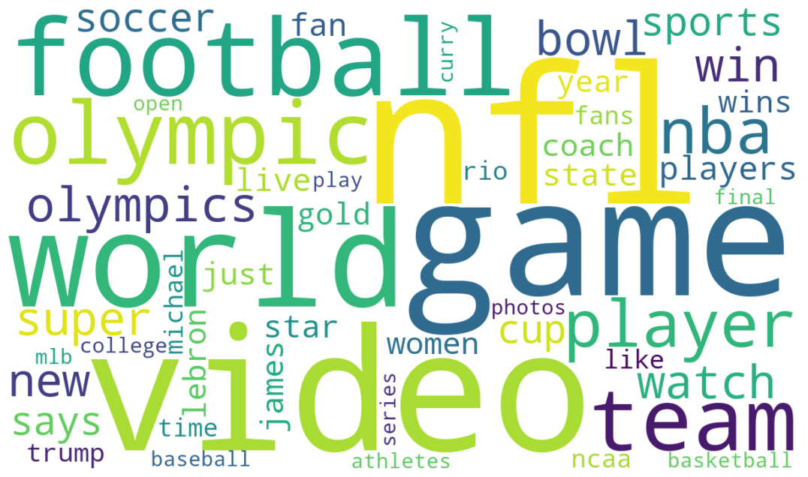
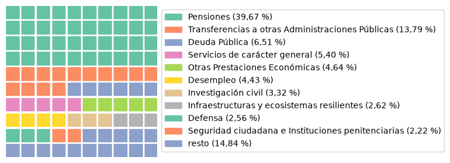
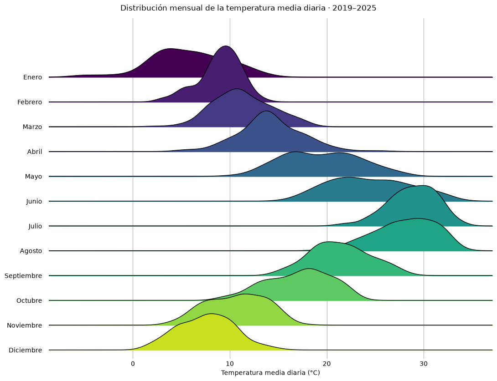

01
Nube de palabras · Word cloud
Las palabras más frecuentes en los titulares deportivos de HuffPost entre 2012 y 2022.
PEC2 · Máster en Ciencia de Datos
Práctica de la asignatura Visualización de Datos del Máster en Ciencia de Datos de la UOC.

01
Las palabras más frecuentes en los titulares deportivos de HuffPost entre 2012 y 2022.

02
El reparto de los Presupuestos Generales del Estado de 2025 en una cuadrícula de 100 cuadrados.

03
La distribución mensual de las temperaturas medias diarias en España entre 2019 y 2025.